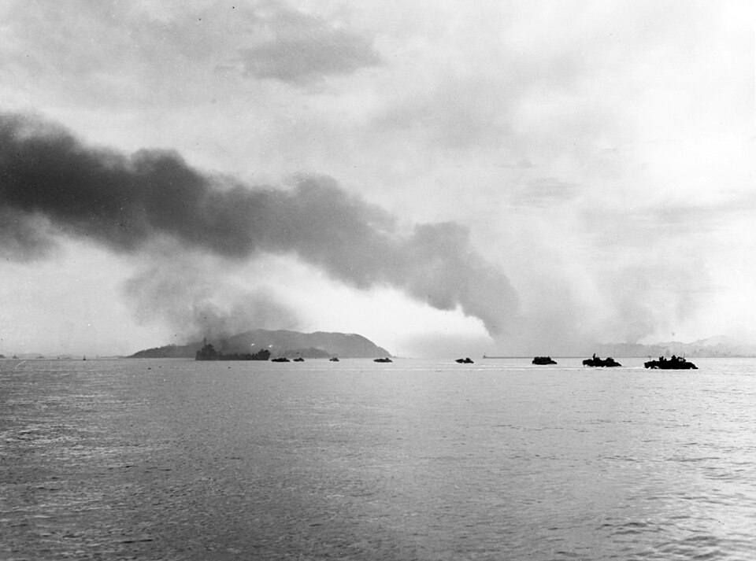
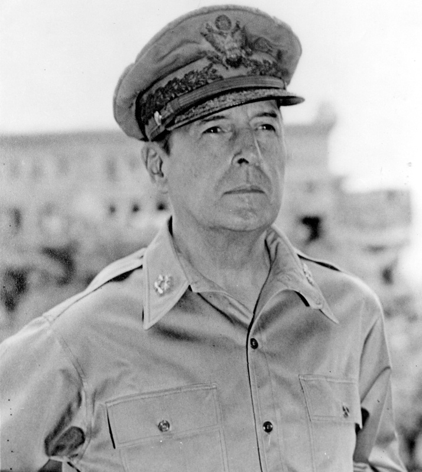

⏱️ 10초 카드 · 태평양 전쟁·한국전쟁 (1880~1964)
인천상륙작전UN군 사령관확전 주장해임
여는 질문 — 유능한 사람의 고집은 — 약일까, 독일까?
이름
한국어더글러스 맥아더
원어Douglas MacArthur
실제 발음더글러스 맥아더
로마자Douglas MacArthur
영어권Douglas MacArthur
왜 이 사람인가
인천상륙작전으로 한국전쟁의 전세를 단번에 뒤집은 명장이에요. 동시에 그 자신감이 더 큰 전쟁을 부를 뻔해 해임됐죠. '능력'과 '절제'는 다른 문제라는 걸, 우리 역사 한복판에서 보여 주는 인물이에요.
생애
한국전쟁 때 UN군을 이끈 미국 장군이에요. 1950년 9월, 모두가 무모하다던 인천상륙작전을 성공시켜 전세를 단번에 뒤집었어요.
그는 여기서 더 나아가 중국 본토까지 공격하자(확전)고 주장했어요.
하지만 트루먼 대통령은 더 큰 전쟁(어쩌면 핵전쟁)을 막으려 그를 사령관 자리에서 해임했어요. '군인보다, 국민이 뽑은 대통령이 전쟁을 결정한다'는 원칙을 보여 준 사건이죠.
자료로 보기 — 유묵·사진



남긴 말
“나는 반드시 돌아온다. (I shall return.)”
2차 대전 때 일본에 밀려 필리핀을 떠나며 한 약속이에요 — 그리고 정말로 돌아왔죠. · 출처: 맥아더, 필리핀 철수(1942)
“노병은 죽지 않는다. 다만 사라질 뿐이다.”
해임된 뒤 의회에서 한 고별 연설의 마지막 구절이에요. 화려했던 군 생활의 끝을 담담히 말한 거죠. · 출처: 맥아더, 의회 고별 연설(1951)
연표
- 1880출생
- 1945일본 점령 총사령관
- 1950.9인천상륙작전 성공
- 1951해임
- 1964사망
태평양을 가로지른 군인의 길
필리핀에서 일본으로, 그리고 인천으로 — 태평양을 무대로 싸우다 한반도에서 정점과 퇴장을 맞은 길이에요.
현재 지도 위 표시예요. 인천에서의 성공과 워싱턴에서의 퇴장이 불과 몇 달 사이의 일이었어요.
빛과 그림자뛰어난 전략가였지만, 자기 확신이 너무 강해 더 큰 전쟁을 부를 뻔했어요. 능력과 절제는 다른 문제라는 걸 보여줘요.
더 깊이 (고등·일반)
태평양 전쟁과 '나는 돌아온다'
2차 세계대전 때 일본군에 밀려 필리핀을 떠나며 그는 '반드시 돌아온다'고 약속했어요. 2년 뒤 그 약속을 지켜 필리핀을 되찾았죠.
일본 점령 총사령관
전쟁이 끝난 뒤 그는 일본을 다스리는 총사령관이 됐어요. 패전국 일본의 전후 질서를 새로 짠 거예요.
인천상륙작전(1950.9)
한국전쟁 초기, 낙동강까지 밀린 상황에서 그는 '모두가 무모하다'던 인천상륙작전을 밀어붙였어요. 도박 같은 이 작전이 성공하며 전세가 단번에 뒤집혔죠.
확전 주장과 해임(1951)
여세를 몰아 그는 중국 본토까지 공격하자고 주장했어요. 하지만 더 큰 전쟁(어쩌면 핵전쟁)을 우려한 트루먼 대통령은 그를 사령관 자리에서 해임했죠.
'노병은 죽지 않는다'
해임은 충격이었지만, 그는 의회 연설을 끝으로 무대에서 내려왔어요. 뛰어난 전략가였지만 자기 확신이 너무 강했던 그의 퇴장은, '능력과 절제는 다르다'는 걸 보여 줘요.
사람의 그물 — 함께 읽을 인물
이 인물이 나오는 이야기
더 공부하기 — 여기서 출발하세요
📚 책으로
- 맥아더 (전기) ↗천재적 전략가이자 거대한 자아였던 군인.
- 한국전쟁사 ↗인천상륙과 확전 논쟁을 큰 그림에서.
📜 1차 사료
- 맥아더 기념관 (미국 노퍽) ↗그의 생애와 유품을 보관한 공식 기관.
🎬 영상으로
- 영상 — 인천·서울 전투 (한국전쟁) ↗ · Marine Corps Association인천상륙작전과 서울 수복을 담은 기록 영상.
📍 가 볼 곳
- 인천 (자유공원 맥아더 동상)인천상륙작전을 기리는 동상이 있어요.
- 맥아더 기념관 (노퍽, 버지니아)그가 묻힌 곳이자 기념관.